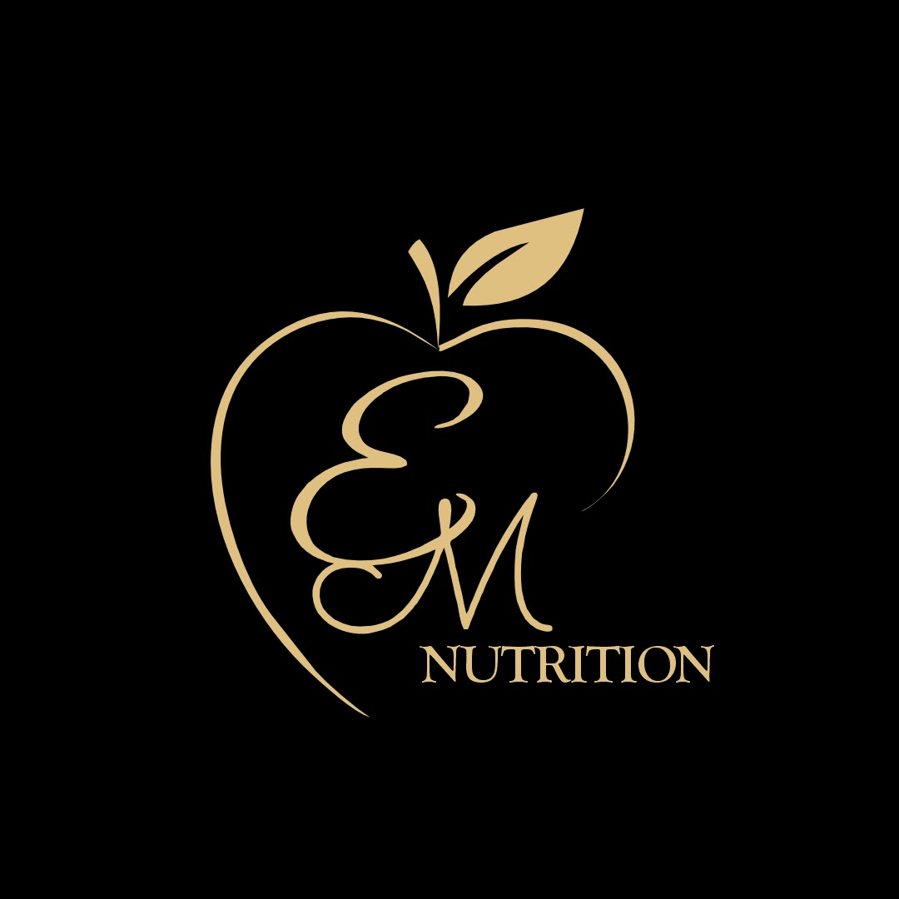
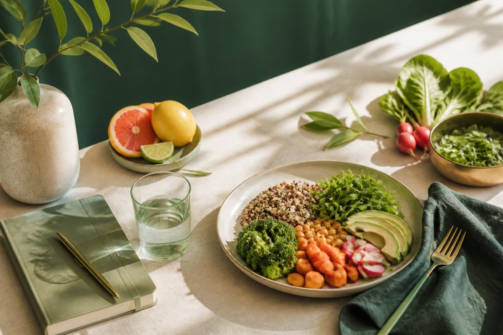
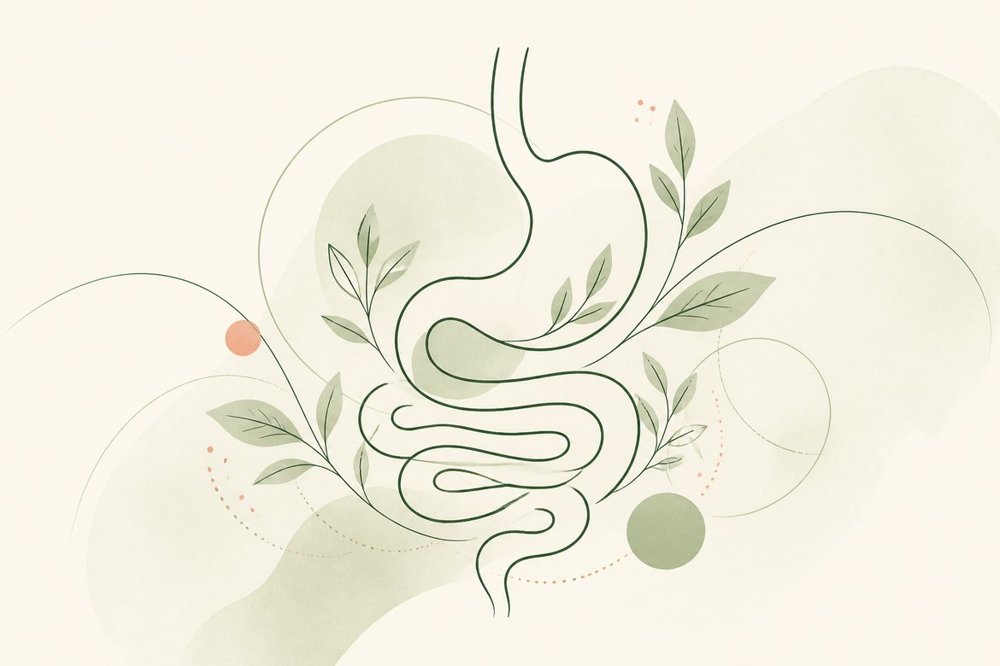
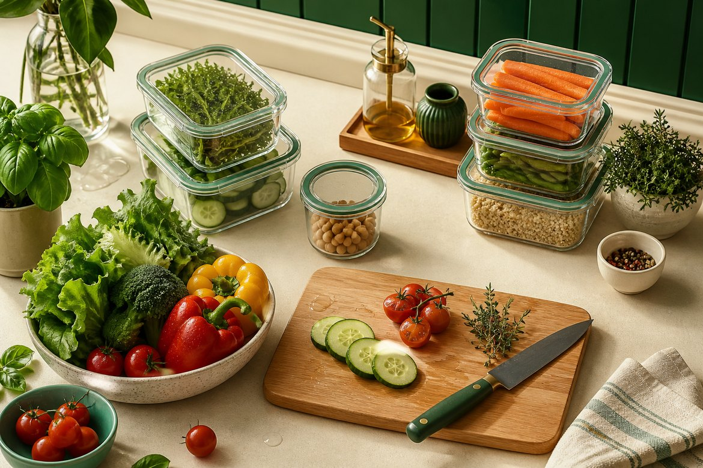
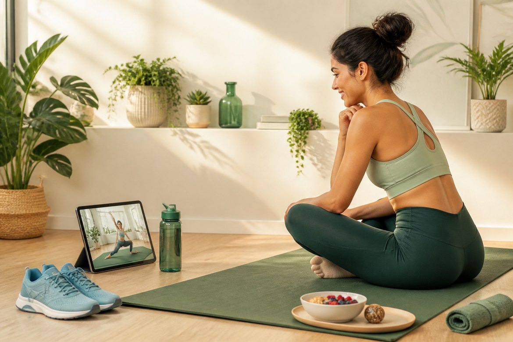
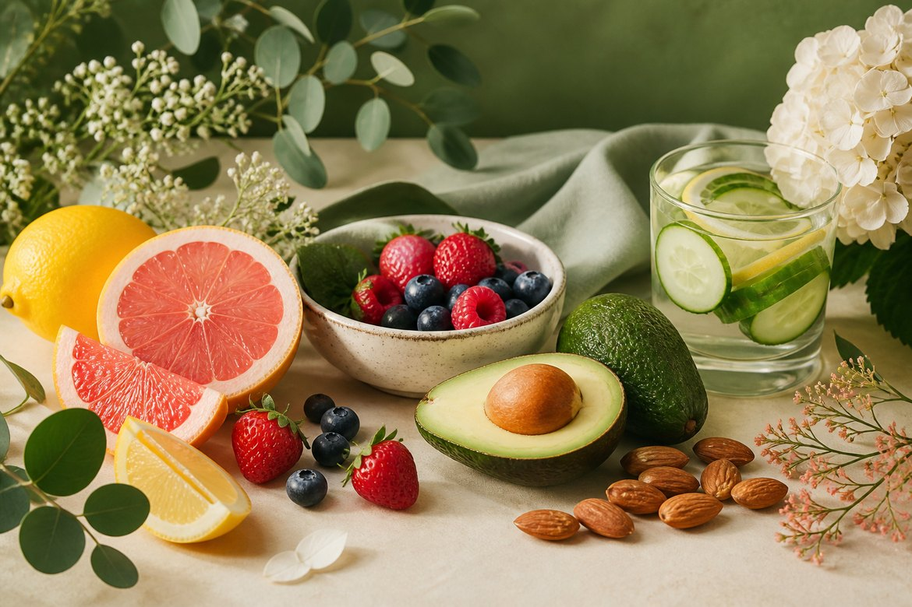
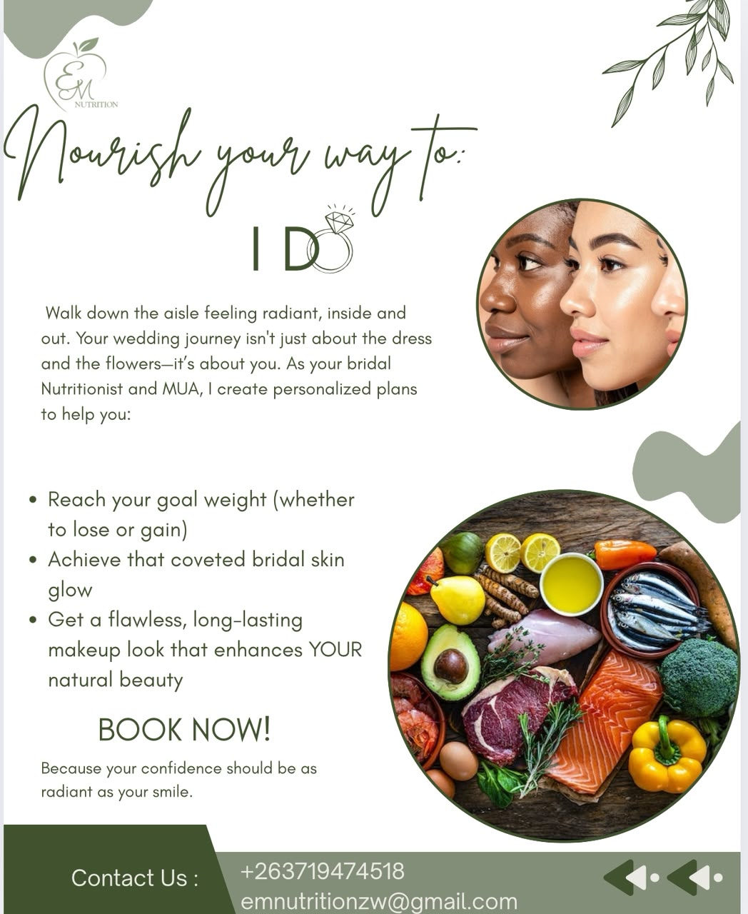

Assess
Understand goals, routines, obstacles, medical context, and the way food fits into the client's life.
Nutrition counseling for real life
EM Nutrition creates personalized diet plans that support fitness, wellness, chronic condition care, and a healthier relationship with food without stress or deprivation.

WhatsApp: +263719474518
Instagram: @emnutrition_zw
Email: emnutritionzw@gmail.com
Location: 1 Colenbrander, Milton Park, Harare
Signature care pathway
Understand goals, routines, obstacles, medical context, and the way food fits into the client's life.
Build a personalized plan for healthy eating habits, meal structure, education, and accountability.
Use follow-up calls, WhatsApp support, and practical reviews to keep progress steady between sessions.
Turn the plan into a confident routine that supports long-term wellness, not short-term pressure.
Services we offer
Personalized support for healthy weight loss, weight gain, or maintenance without crash dieting or deprivation.

Nutrition guidance for bloating, constipation, reflux patterns, food tolerance, and healthier gut routines.

Support for children's growth, energy, immunity, school focus, picky eating, and healthy food confidence.
Simple planning support for balanced meals that feel realistic, affordable, and easy to repeat.

Supportive online movement sessions paired with nutrition habits that help clients build consistency and energy.

Nutrition care for women before, during, and after pregnancy, focused on nourishment, energy, recovery, and confidence.
Practical nutrition support for breastfeeding mothers, focused on adequate intake, hydration, recovery, and baby-friendly routines.
Coaching that helps clients move from confusion to a simple food routine they can maintain.
Food and lifestyle guidance that supports hydration, nutrient adequacy, inflammation balance, and a healthy skin routine.

Clear training for safer food handling, storage, preparation, and hygiene routines at home, school, or work.
Nutrition support for training, recovery, hydration, and energy needs across active lifestyles and sports goals.
Nutrition care can support immune function, healthy weight maintenance, medication tolerance, and long-term risk reduction.
Nutrition support during and after cancer treatment focuses on strength, tolerance, hydration, and practical food choices during changing symptoms.
Diabetes support is built around steady routines, balanced meals, and learning how the body responds to food, medication, and activity.
Renal nutrition must be highly individualized, guided by kidney function, dialysis status, lab trends, fluid needs, and other conditions.
Care is tailored around eGFR, dialysis modality, lab trends, symptoms, and comorbidities.
The goal is to reduce reflux episodes, minimize esophageal irritation, and limit triggers that can relax the lower esophageal sphincter.
PMOS support focuses on improving insulin sensitivity, supporting hormone balance, and reducing chronic inflammation, not only weight loss.
Nutrition support for chronic hypertension focuses on diet and lifestyle adjustments that help protect heart and vascular health.
Nutrition care can also support weight loss, mood and overall well-being, hormone balance, prevention, inflammation, high cholesterol, heart disease, IBS, gastrointestinal issues, and other stress-related conditions.
Counseling programs
A three-month commitment to establish goals, get into a routine, and make changes as they arise.
A more intensive month-long commitment where each session gets right to the core of coaching.
A 60 minute session to sit down, define what you would like to work on, and discuss goals, obstacles, and nutrition priorities.
Nourish your way to
Walk down the aisle feeling radiant, inside and out. As your bridal nutrition and beauty support partner, EM Nutrition creates personalized plans for confidence that feels as natural as your smile.

Meet Elva Maria
Elva is a passionate Registered Nutritionist dedicated to helping clients nourish their body, mind, and everyday life. With a background in Food Science and Nutrition and more than 6 years of experience, she brings calm, evidence-informed guidance to people who want better health without stress, shame, or diet culture.
Her work supports clients managing health conditions, building energy and vitality, improving confidence, or simply learning how to make food feel practical again. Every recommendation is personalized around real food, sustainable habits, medical needs, lifestyle, and long-term consistency.
When she is not creating meal plans or reading nutrition research, Elva enjoys cooking, working out, walking with Nugget, trying herbal teas, drawing, and reading.
Here is to your health, Elva Maria
Built for individual clients, wellness teams, clinics, schools, corporate groups, and institutional partners.
Nutrition guidance that is warm, clear, and credible.